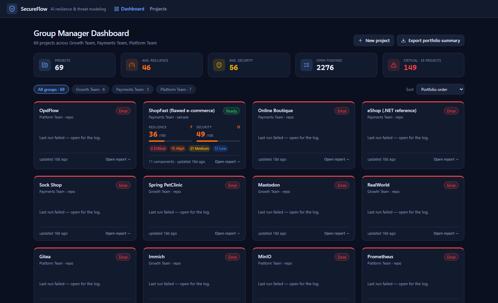
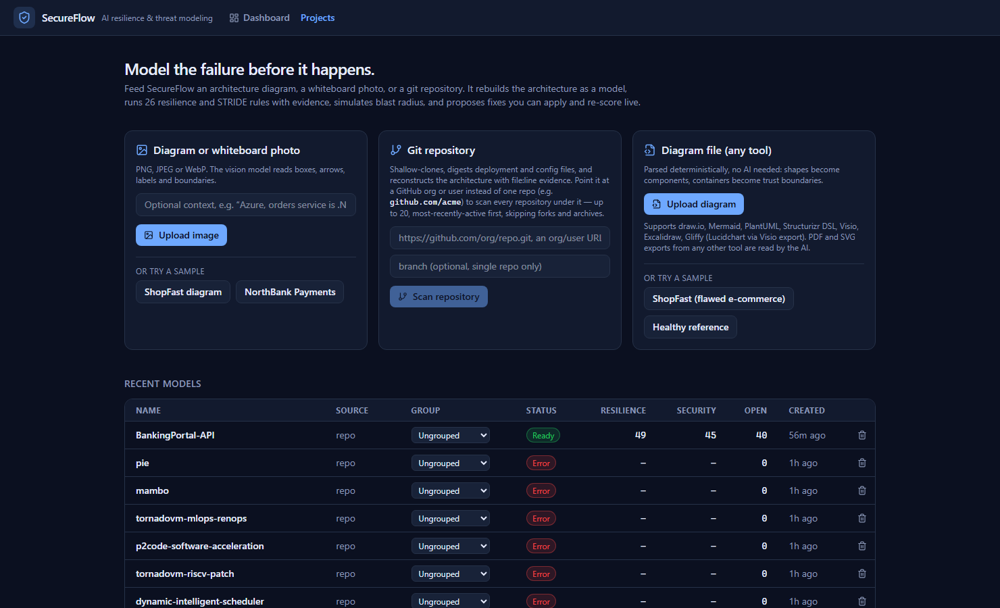
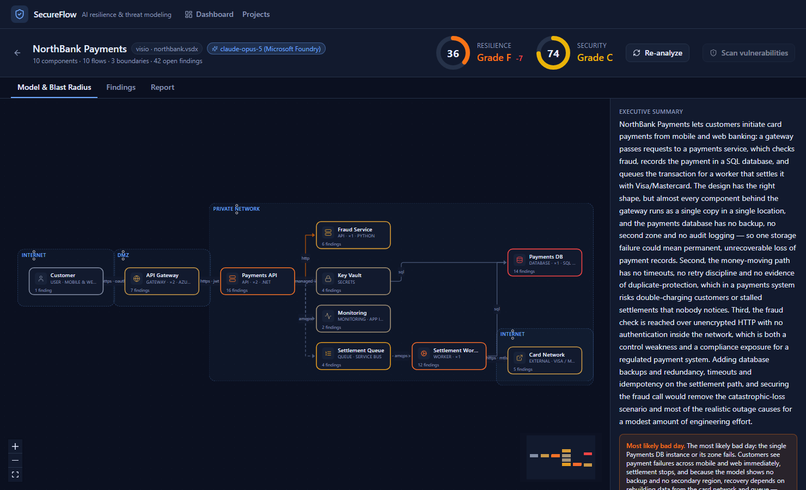
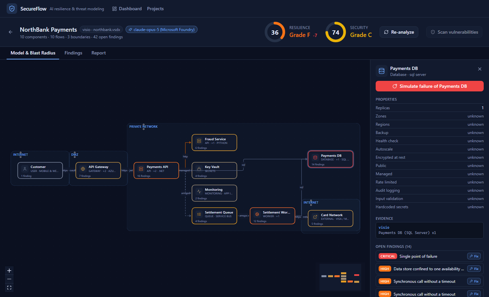
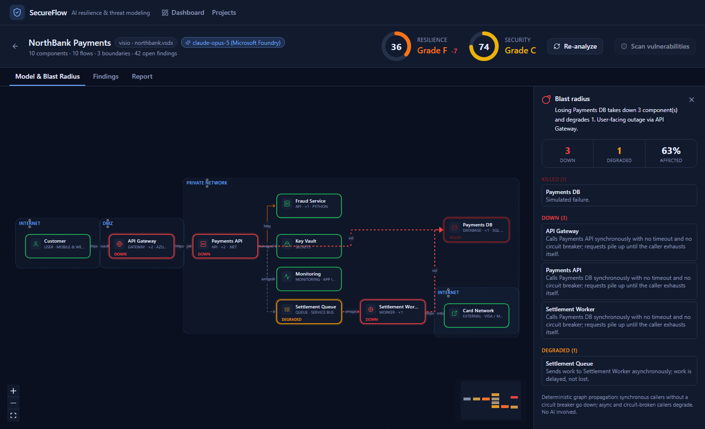
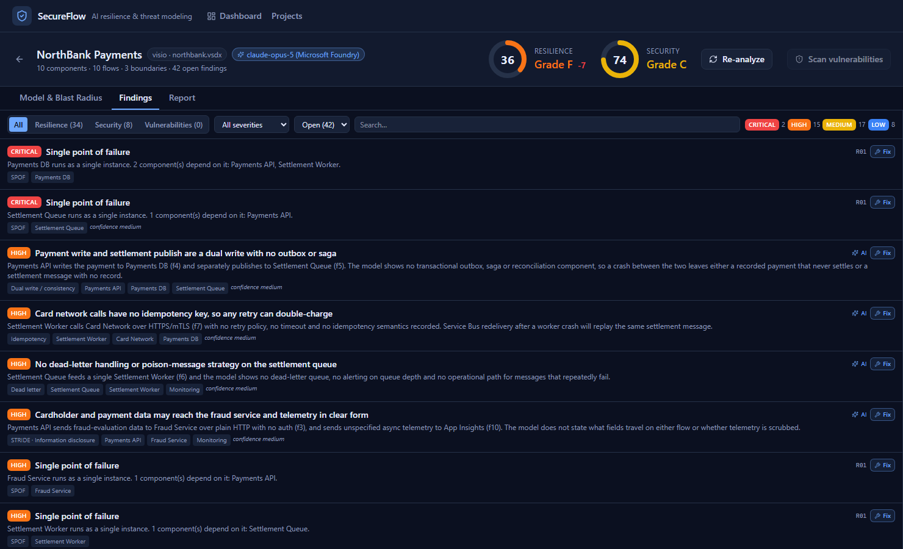
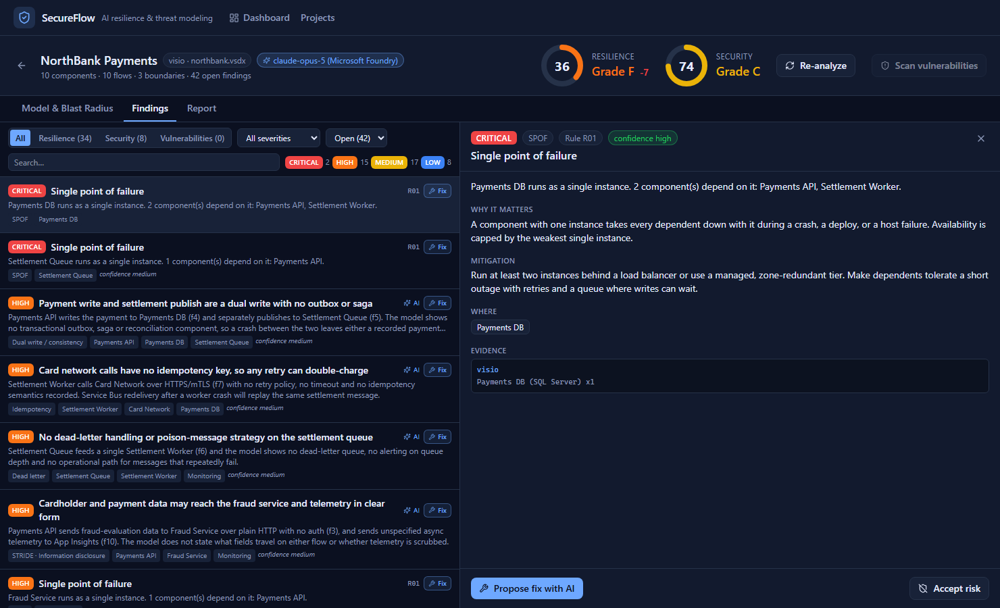
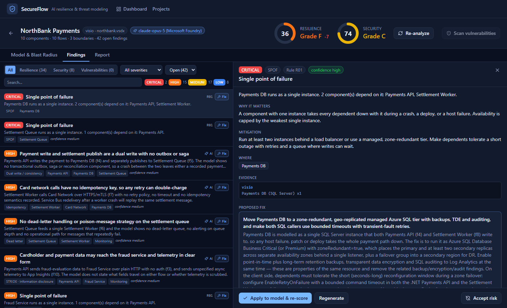
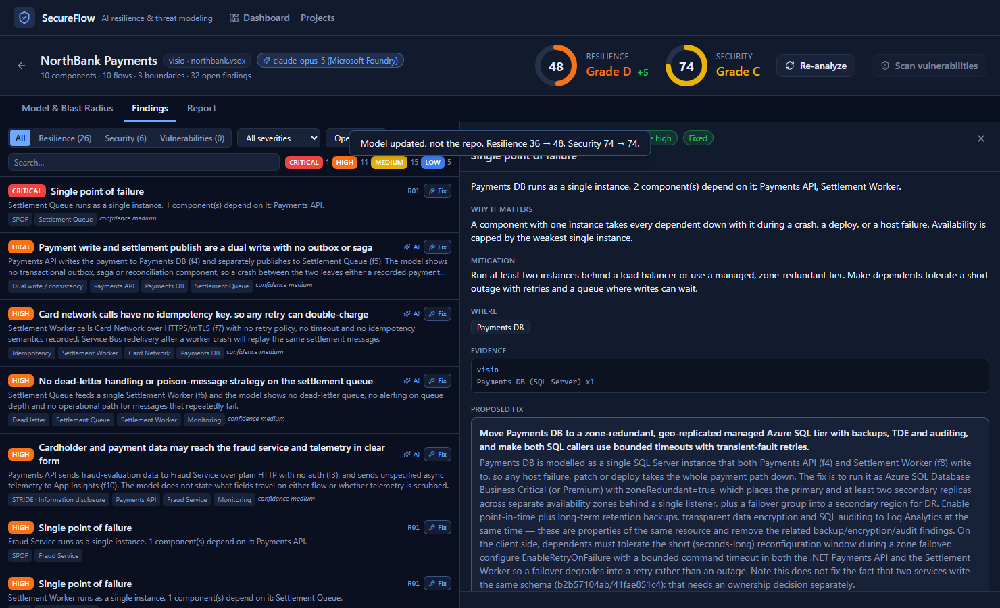
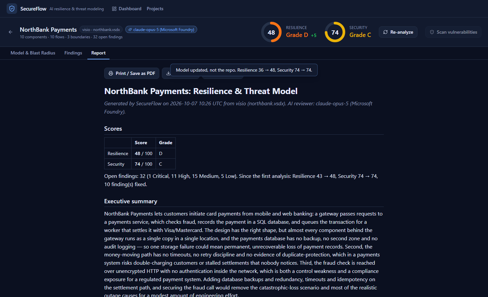

What this is
This was run on 2026-10-07, on the feature/tool-agnostic-diagram-import branch, against the local server at http://localhost:5180 with a real Microsoft Foundry (Claude) key configured on this VM. It uploads samples/diagrams/northbank.vsdx — a Visio file, read with no AI — through the full product: model, blast radius, findings with evidence, an AI-proposed fix, a live re-score, and the printable report.
Screen recording
A 34-second capture of the exact sequence below, recorded directly from the running app. It plays here, and it also plays natively if you open docs/walkthrough/secureflow-walkthrough.webm directly on GitHub — no SecureFlow server, no clone, no API key required to watch it.
Step-by-step walkthrough

1Group Manager Dashboard
The portfolio view: 69 projects already on this machine from earlier testing, rolled up by team, with average Resilience/Security and a count of open Critical findings across all of them. This is what a manager sees without opening any single project.

2Projects page
The three ways in: an image or whiteboard photo (AI), a git repository, and — the capability added on this branch — a diagram from any tool: draw.io, Mermaid, PlantUML, Structurizr, Visio, Excalidraw, Gliffy, or a PDF/SVG export, all through one button.

3Model, right after upload
A Visio file, parsed with no AI into components, flows and trust boundaries. The AI review on the right adds the executive summary and "most likely bad day" from the model — in this run it replayed from the cache (see below) rather than calling out, which is why it appeared almost instantly.

4Component detail
Properties, the evidence line it was built from (visio · Payments DB (SQL Server) x1), and its 14 open findings — each with a one-click Fix button.

5Blast radius
Deterministic graph propagation, no AI: losing Payments DB takes 3 components down and degrades 1 — a 63% blast radius, with the exact reason given for each ("calls Payments DB synchronously with no timeout and no circuit breaker").

6Findings list
Every finding is filterable by category and severity, and tagged AI when it came from the contextual review rather than a fixed rule.

7Finding detail
Why it matters, the suggested mitigation, exactly which evidence line it's grounded in, and the button to ask the AI for a concrete fix.

8AI-proposed fix
A specific, model-grounded proposal — not generic advice. Apply to model & re-score patches the architecture model (never the real repository) and re-runs the rules immediately.

9Applied — score moves live
The toast is explicit that this changed the model, not the repository — SecureFlow proposes and demonstrates; a person still decides what ships.

10Report
The same scores, the full executive summary, and "since the first analysis" history — 43 → 48 Resilience over the session, 10 findings fixed. This is what a reviewer reads without opening the UI at all.
Demoing after this VM is gone
Three constraints, stated plainly:
| Constraint | What it rules out |
|---|---|
| This VDI will be wiped | Anything that only exists on local disk here — screenshots and video are already solved by committing them (above). |
| The AI key only exists on this VM | Running a new scan, with a new input, anywhere else — the AI call would fail with no key. |
Only git push is allowed out of this machine | No uploading to cloud storage, no deploying a server elsewhere, no emailing files. |
The video solves "show it once, anywhere, to anyone" — it needs nothing but a browser. But if you want to show the running app again — click around live, open a different finding, show the blast radius on a different node — you need the server actually running, and that means the AI calls it already made need to work without the key. That turns out to be possible, and I tested it for real before writing this.
"placeholder-no-real-key-needed", offline mode forced on, and a cache folder containing only 7 small JSON files (no screenshots, no code, just recorded AI responses). I then ran secureflow diagram northbank.vsdx fresh against it. Model, AI review and the fix proposal all replayed correctly — same scores, same fix text, same everything — and the project's own log recorded it honestly: Replayed analyze from cache (749cf0d0)… and Replayed fix from cache (0b08016d)…. No network call was made, and none could have succeeded with that key even if attempted.The offline-replay recipe
On any machine with just the .NET 10 runtime (no API key, no network needed) — a judge's laptop, a conference room PC, anything:
-
Clone the repo (public GitHub access is all this needs):
git clone https://github.com/skriss03/SecureFlow.git cd SecureFlow git checkout feature/tool-agnostic-diagram-import # or wherever this lands after review -
Point the server at the seed cache and force offline mode. The values below must match exactly what the cache was recorded under — see "Why this works".
# PowerShell $env:SECUREFLOW_AI_OFFLINE = '1' $env:Ai__CacheDir = (Resolve-Path samples\demo-replay-cache) $env:Ai__Provider = 'foundry' $env:Ai__FoundryDeploymentName = 'claude-opus-5' $env:Ai__FoundryResourceName = 'placeholder' $env:Ai__AnthropicApiKey = 'placeholder' -
Run it:
dotnet run --project src/SecureFlow.Api
Health check should show"offline":true,"ai":{"available":true}— available with a placeholder key, because nothing is actually calling out. -
Scan the same file again and it replays instead of failing:
dotnet run --project src/SecureFlow.Cli -- diagram samples/diagrams/northbank.vsdx --open
You get the identical report this walkthrough shows: Resilience 36 (F), Security 74 (C), the same 42 findings, and the same AI-proposed fix for Payments DB — all without a real key anywhere on the machine.
.vsdx upload, its AI review, and the fix for the Payments DB single point of failure). Click into a different finding's fix, or upload a different file, and you'll get a clean, honest Offline mode: no cached response — run once online to record it error rather than a silent failure or a fake answer. See "Adding more scenarios" to extend what's covered before access is lost.Why this works
Every AI call in SecureFlow goes through a content-addressed replay cache (src/SecureFlow.Ai/Caching/ReplayCache.cs) — it already exists for a different reason (surviving a flaky network during a live demo), and it happens to solve this problem too:
- The cache key is a hash of the operation, the exact provider name string (e.g.
claude-opus-5 (Microsoft Foundry)), and the real request content (the model, the digest, the finding). It is not a hash of the API key — the key never enters the key material at all. - With
SECUREFLOW_AI_OFFLINE=1, a cache hit returns the recorded response; a cache miss throws a clear error instead of ever attempting the network — so there is no way for it to accidentally "half work" with a bad key. - The provider classes only check that a key string is non-empty at startup (so the app can start at all); they never validate it until a real network call is attempted — which offline mode guarantees never happens for a cached scenario.
- Because the provider name is part of the key, the offline machine's
Ai:Provider, model and deployment-name settings must match what was recorded exactly — that's why the recipe above pins them.
I checked every file in samples/demo-replay-cache/ for anything secret-shaped (API key patterns, bearer tokens) before committing them — they contain only the operation name, the provider name, a timestamp, and the AI's own response text.
Adding more scenarios — do this before access is lost
The cache only grows while a real key still works, which is only on this VM, only until it's wiped. For every additional thing you might want to click on in a future offline demo (a different sample's AI review, a different fix, a repo scan's AI extraction), do this now:
- Run it for real, once, on this VM, with the real key (exactly as today).
- Find the new file(s) it created in
src/SecureFlow.Api/data/cache/(sorted by time, orgrep -lfor distinctive text as I did above). - Copy them into
samples/demo-replay-cache/and commit.
Each file is a few KB of text — there's no practical reason not to be generous here before this environment disappears.
What this doesn't solve
- A brand-new scan of a file nobody has fed it before still needs a real AI key. Offline replay is a rehearsed demo, not a general substitute for having a key.
- Deterministic-only work has no such limit. Every structured diagram format (draw.io, Mermaid, PlantUML, Structurizr, Visio, Excalidraw, Gliffy), the 26 resilience/STRIDE rules, scoring and blast-radius simulation need no AI at all, on any machine, forever — only the AI review and the AI-proposed fixes are cache-dependent.
- CVE scanning (OSV.dev) is a real network call with no replay cache today, and would need actual internet access (not an API key) to run fresh on another machine.